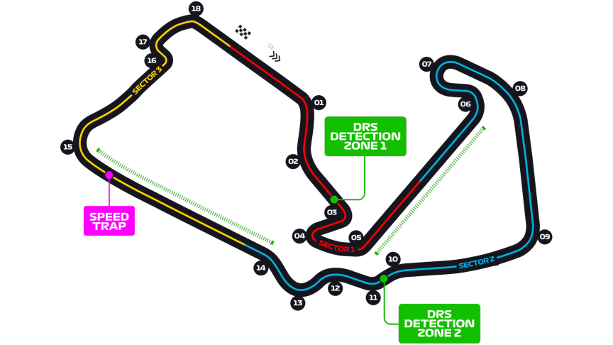

Grand Prix de Grande-Bretagne
Informations
Nom du circuit
Silverstone Circuit
Lieu
Silverstone (Angleterre)
Nombre de tours
52
Longueur du circuit
5.891 km
Distance de course
306.198 km
Dernier vainqueur
Max Verstappen
Classement nombres de victoires sur ce circuit
8 victoires - Lewis Hamilton
5 victoires - Alain Prost
3 victoires - Jim Clark
3 victoires - Nigel Mansell
3 victoires - Mickael Schumacher
Le saviez-vous ?
Le circuit a accueilli la toute première course de Formule 1 comptant pour le championnat du monde.
Lors de l'édition 2020, le pilote britannique Lewis Hamilton a fini la course vainqueur mais sur seulement... 3 roues ! Effectivement, avec les fortes chaleur, les pneus Pirelli ont été mis à rude épreuve et lors du dernier tour de course, c'est le pneu avant gauche du vainqueur qui explosa. Max Verstappen n'a manqué que de 6 secondes pour pouvoir remonter sur Hamilton.
C'est un circuit où les pilotes britanniques excellent particulièrement. Pour preuve, il y a eu 24 victoires britannique dans l'histoire du GP devant les pilotes allemand et leur "seules" 6 victoires.